Three directions inspired by Logo Modernism (Taschen) + Cluely's minimalism. Click any SVG link to inspect the source. Read the full identity brief →
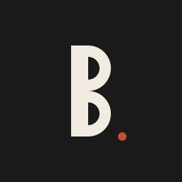
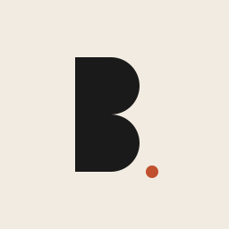
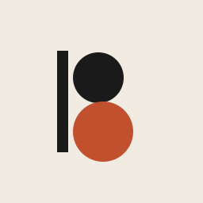
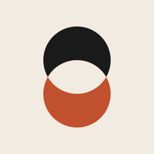
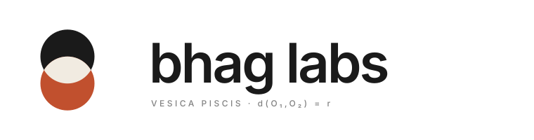
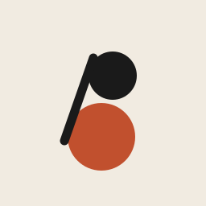
sin θ = (R − r) / d
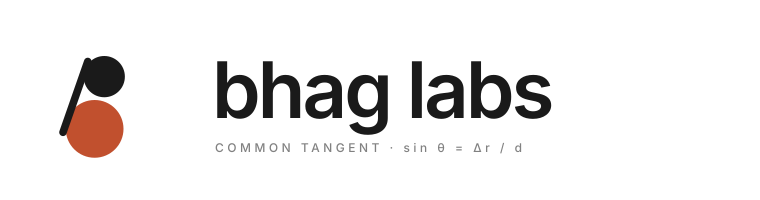
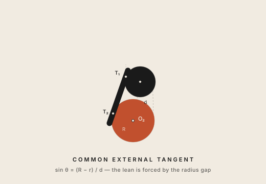
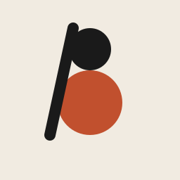
d = R + r ⇒ sin θ = (R − r) / (R + r)
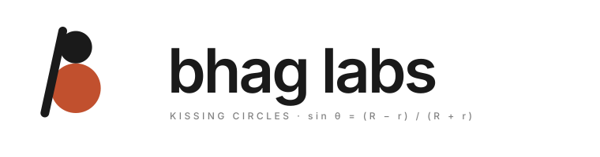
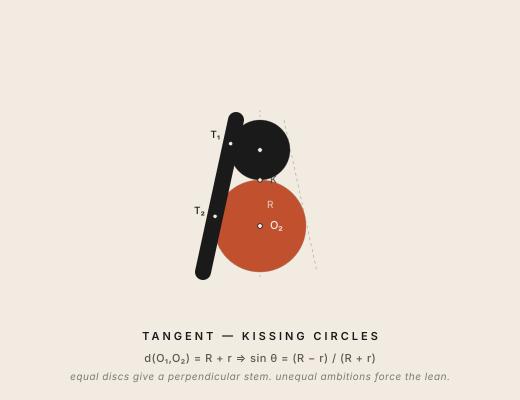
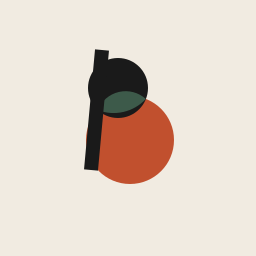
d(O₁, O₂) < R + r ⇒ discs intersect at P₁, P₂
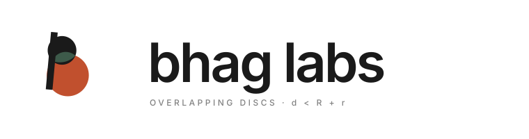
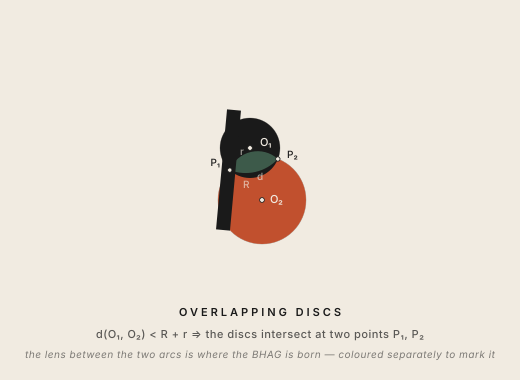
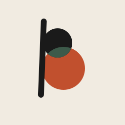
clipPath — the bottom disc redrawn in forest green, clipped to the interior of the top disc. This produces the exact intersection with no missing pixels. (v6's hand-traced lens path picked the wrong arcs on the bottom disc and only covered part of the overlap.)
d < R + r (overlap) sin θ = (R − r) / d (tangent lean)
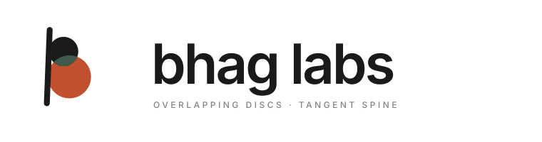
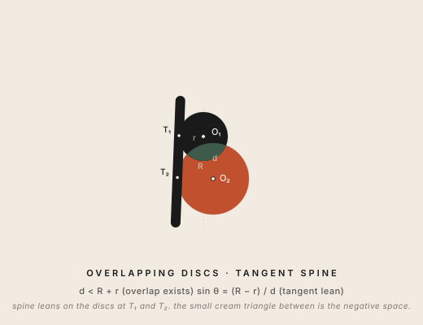
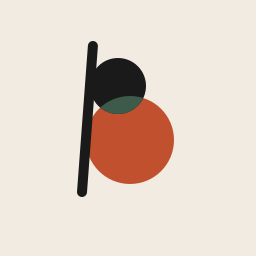
sin θ = (R − r) / d = 16/55.3 yields a steeper tangent angle. The italic lean is now perceptible without being cartoonish.
r=28 R=44 d≈55.3 → lean ≈ 4.3° · bowl ratio ≈ 0.64
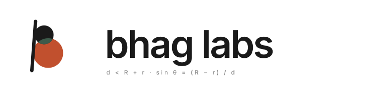
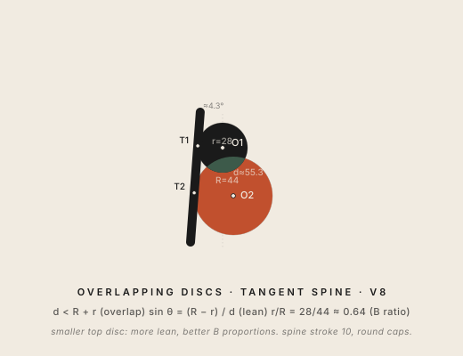
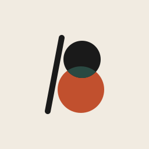
#2a4942. Stem leans ~11° right.
r=32 R=40 overlap≈20 lean≈11° stroke 10 gap≈5px
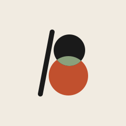
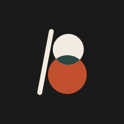
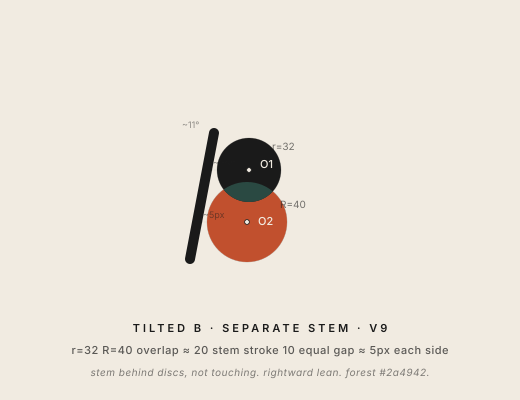
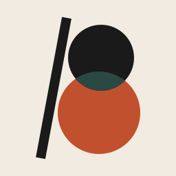
#2a4942 lens. Dark: ochre #c89b27 lens (per brand guide: ochre for highlights on dark).
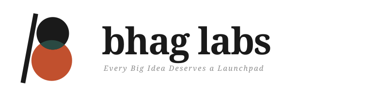
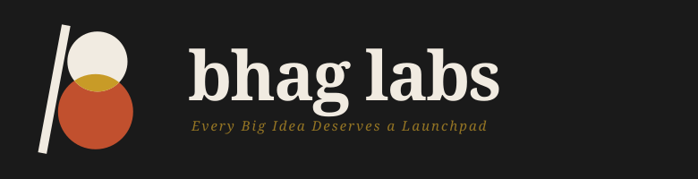
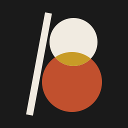
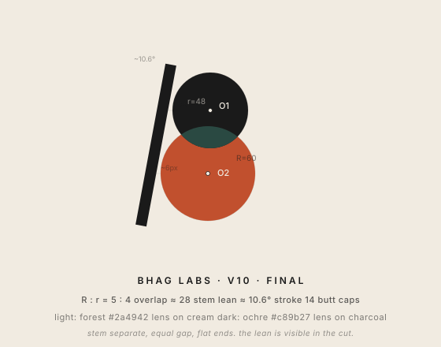
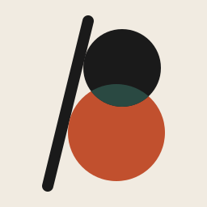
(59, 230). Only the angle is free.
(147, 84) to (151, 84). Bottom disc unchanged. This is the unique rotation that makes a stem anchored at (59, 230) tangent to both circles at once.
85 cos θ − 66 sin θ = R + 7 = 67 ⇒ θ ≈ 13.67°
stroke-linecap="round" — semi-circular ends of radius 7 at both stem termini. Softer than v10's butt caps; the stem reads as drawn, not cut.
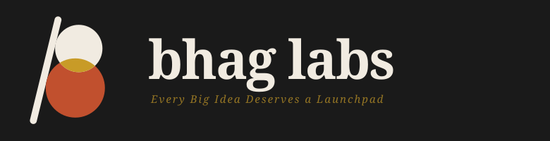
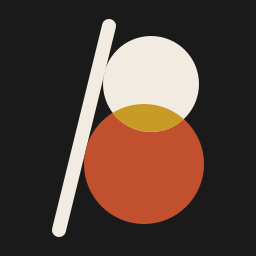
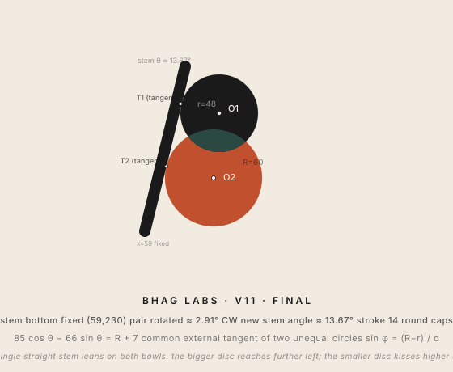
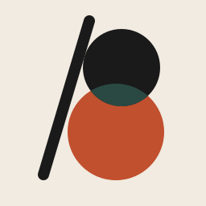
r + 7 = 55 from (151, 84). Contact point at ~(98, 69).
(144, 164) is R + 7 + g = 71. The cream sliver between the stem and the leftmost edge of the bottom bowl is the “little triangle” that gives the figure breathing room.
80 sin θ − 7 cos θ = 12 + g ⇒ θ ≈ 16.5° for g = 4
g = 0 recovers v11's dual tangency at θ ≈ 13.67°.)
(54, 217); the round cap of radius 7 lands its lowest point at (52, 224) — exactly the y of the bottom disc's bottom-most point. Spine and bowl share one baseline like a classical typographic B.
(111, 26) — peeks above the upper bowl by ~17 px. Same projection as v11.
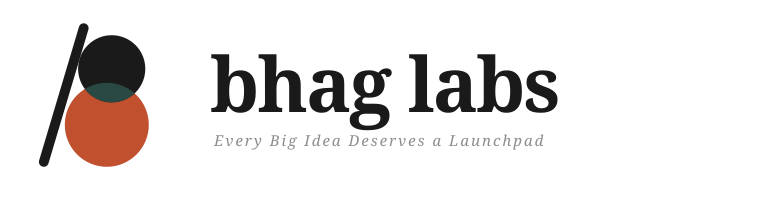
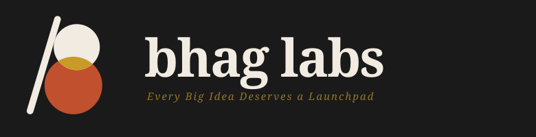
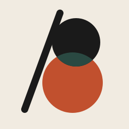
r + 7 − o = 50. About 36% of the stem's width crosses the disc edge. Enough to merge, not enough to lose the stem's line.
(144, 164): R + 7 + g = 71. Cream sliver preserved.
80 sin θ − 7 cos θ = (R + 7 + g) − (r + 7 − o) = 21 ⇒ θ ≈ 20.2°
o − g.
(49, 217); round cap of radius 7 lands at (47, 224), exactly the bottom disc's lowest y.
#1a1a1a for both stem and top disc. #c1502e for the bottom disc. #2a4942 (forest) or #c89b27 (ochre, dark mode) for the lens.
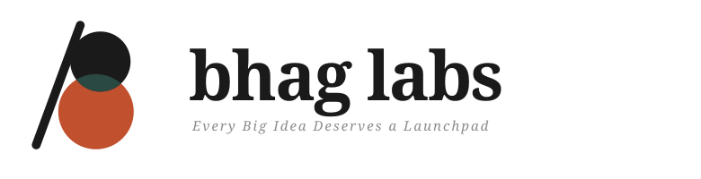
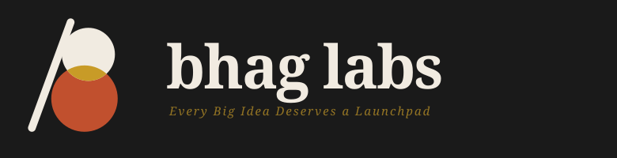
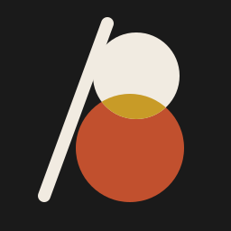
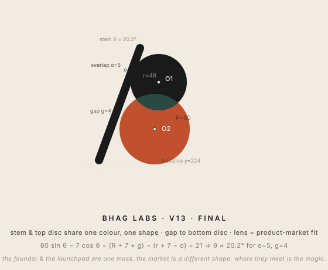